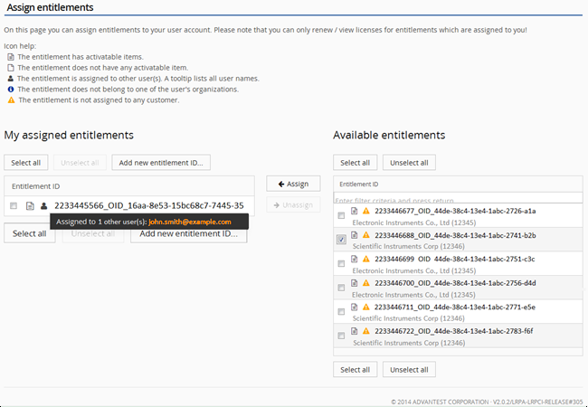
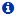

Entitlements
Your company can hold several entitlements, acquired with different purchases, only a subset of those entitlements may be assigned to your user account. To see your assigned entitlements, log in to your user account at the Advantest License Renewal Portal and click the Assign Entitlements link.
An entitlement assigned to you can also be co-assigned to other user accounts, for example, to a general company user account. A mouse-over text box (see below) displays the name of all additional user accounts that have that entitlement co-assigned. If an entitlement is assigned to more than one user account, other users can also view and renew the licenses of that entitlement.
To avoid later conflicts, the internal ownership for the entitlements should be clear before starting to assign entitlement certificates.
When the ownership changes, due to system movement or other reasons, make sure the change is also reflected in the entitlement assignment on the Renewal Portal.
The entitlement ID is the key to all assignments and license renewal activities. Entitlement
IDs are case sensitive. To assign an entitlement to your user account, you must be able to
identify the entitlement that you want to assign, either from the ID or the alias. The first part
of the entitlement ID (before _OID_), which is the typical Advantest order
number, is usually sufficient to identify and select an entitlement and move it to the "My
assigned entitlements" table.
Example

The Assign entitlement page is divided into two lists of entitlements.
- My assigned entitlements – Displays a list of entitlements that are assigned to you.
- Available entitlements – Displays a list of entitlements that are available but not assigned to you.
The entitlements listed in the table on the right have been purchased by your legal entity.
You can use these lists to:
- Check whether entitlements booked under your legal entity are appropriately assigned to your user account.
- Assign and remove entitlements to and from your user account.
The Assign entitlements page also provides additional information about the entitlements:
– The entitlement has activatable items.
– The entitlement does not have any activatable item. These entitlements do not need to be renewed.
– The entitlement is assigned to other users. A tooltip lists all user names.

– The entitlement does not belong to any of your assigned organizations (legal entities).– The entitlement is not assigned to any customer. Typically all entitlements should be assigned to a customer.